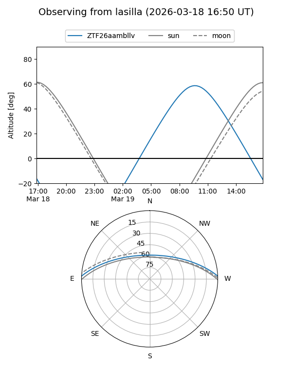
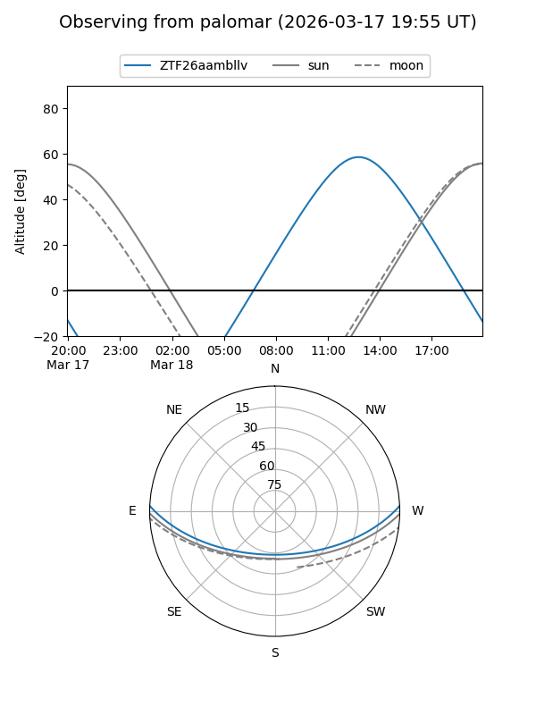

ZTF26aambllv
Target ZTF26aambllv at 2026-03-18 14:56
Aliases and brokers:
FINK: link
Lasair: link
ALeRCE: link
alt names
ZTF26aambllv (ztf,fink_ztf)
Coordinates:
equatorial (ra, dec) = 250.5735,+2.09659
equatorial (HMS+DMS) = 16:42:17.63,+02:05:47.73
galactic (l, b) = (18.9191,+29.45548)
Flags:
Photometry:
last ztfg=17.70, ztfr=16.83
1 ztfg, 1 ztfr detections
Lightcurve
Visibility


Additional plots